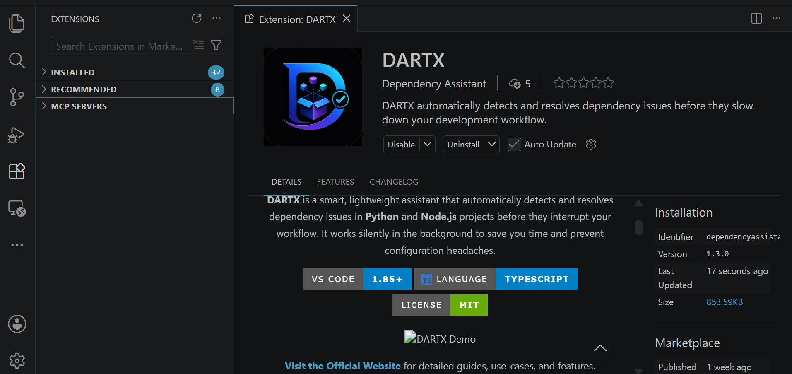
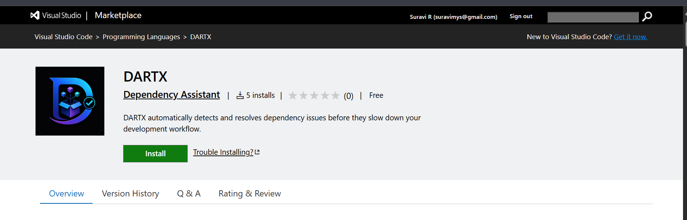

Stop wrestling with dependencies. Start coding.
Open the slide deck for the full product story, workflow, and intelligent dependency resolution features.


The full source code is available on GitHub.